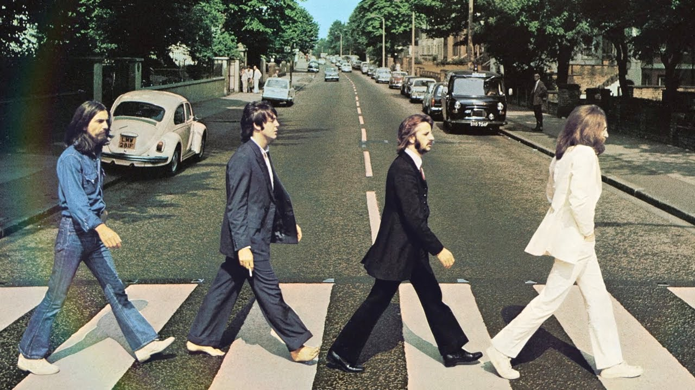

A História do Rock no Brasil e sua Importação Internacional (60s-80s)
O rock é um gênero musical originado nos Estados Unidos durante a década de 1950, com raízes no rhythm and blues, no country e no gospel. Rapidamente, tornou-se um fenômeno global, impulsionado pela indústria fonográfica, pelo cinema e, mais tarde, pela televisão. No Brasil, o rock chegou ainda nos anos 1950, mas foi a partir da década de 1960 que começou a se consolidar como um movimento cultural significativo.
A importação do rock para o Brasil se deu principalmente por meio das ondas do rádio, da influência de artistas internacionais como Elvis Presley, Chuck Berry e The Beatles, e da difusão de filmes musicais norte-americanos. Jovens brasileiros começaram a imitar os estilos musicais e visuais desses artistas, surgindo assim os primeiros representantes do rock nacional, como Celly Campello, Sérgio Murilo e os grupos da Jovem Guarda, liderados por Roberto Carlos, Erasmo Carlos e Wanderléa.

Nos anos 1970, o rock brasileiro passou por um período de transformação. Bandas como Os Mutantes e artistas como Raul Seixas fundiram o rock com elementos da música popular brasileira (MPB), psicodelia e crítica social, dando início a um estilo mais autoral e engajado. A influência estrangeira permaneceu forte, especialmente com o surgimento de subgêneros como o hard rock e o progressivo, inspirados por bandas como Led Zeppelin, Pink Floyd e Deep Purple.
A década de 1980 marcou o auge do rock no Brasil. Com a abertura política e o fim da ditadura militar, o gênero ganhou força como forma de expressão de uma juventude urbana que buscava liberdade e identidade. Bandas como Legião Urbana, Titãs, Paralamas do Sucesso, Barão Vermelho e RPM trouxeram o rock para o centro da cultura pop brasileira. Apesar da clara influência internacional, esses grupos desenvolveram uma linguagem própria, abordando temas sociais, políticos e existenciais ligados à realidade brasileira.
Ao longo das décadas seguintes, o rock brasileiro continuou evoluindo, absorvendo elementos do punk, do grunge, do metal e até da música eletrônica, sempre em diálogo com as tendências vindas da América do Norte e da Europa. Contudo, o processo nunca foi de mera cópia: o rock no Brasil passou por um processo de tropicalização, no qual referências externas foram reinterpretadas à luz da cultura, do idioma e das questões sociais locais.
Em resumo, o rock chegou ao Brasil como um produto cultural importado, mas encontrou um terreno fértil para se transformar e ganhar identidade própria. A história do rock no país é marcada por um constante intercâmbio entre o global e o local, refletindo tanto a influência da indústria cultural norte-americana quanto a criatividade e a diversidade da música brasileira.